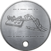

Un Dog Tag o Dogtag (Xapa) és el nom informal de les etiquetes d'identificació que porten el personal militar, sobrenomenades com a tal a causa de la seva semblança amb les etiquetes de gossos reals. L'etiqueta s'utilitza principalment per a la identificació de morts i ferits a més de proporcionar informació mèdica bàsica essencial per al tractament d'aquests últims, com ara el tipus de sang i la història de les inoculacions. Les plaques de gossos solen fabricar-se amb un metall o aliatge resistent a la corrosió com l'alumini, el monel o l'acer inoxidable, tot i que en temps de guerra s'han fet amb qualsevol metall disponible. En cas que el soci tingui una afecció mèdica que requereixi una atenció especial, s'emet una etiqueta vermella addicional amb la informació pertinent i s'utilitza amb les plaques.
| Nom | Imatge Xapa | Altre Informació |
| Un Començament | Has trobat alguna cosa que no et pertany. (Antic) Crec que he interceptat missatges destinats a un altre. Xifrats i misteris, també intrigant. No puc ignorar el que m'he trobat. (Actual) |
|
| Un Conflicte | Les veus han estat en silenci massa temps. (Antic) Això és més gran del que em pensava. Potser he estat testimoni d'horrors més antinaturals que la guerra mateix. La pista que segueixo ara em podria portar directament a la font. He de continuar. (Actual) |
|
| Un Presagi | Estás cometiendo un gran error. (Antic) La seva operació s'està enfonsant. Cada pista que segueixo surten a la llum publicacions abandonades i experiments fallits. Això és incompetència o sabotatge? Crec que tinc una nova causa per descobrir aquests secrets. (Actual) |
|
| L'habitació |  | Quants altres secrets estan tancats? El Codi Morse en xapes es tradueix com a SECRET REVELAT |